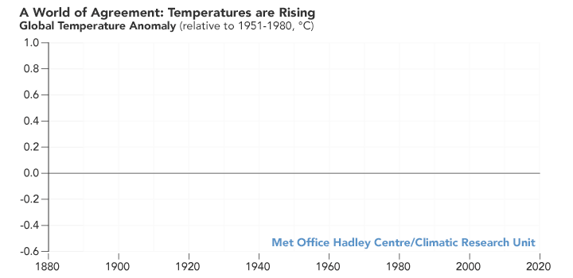
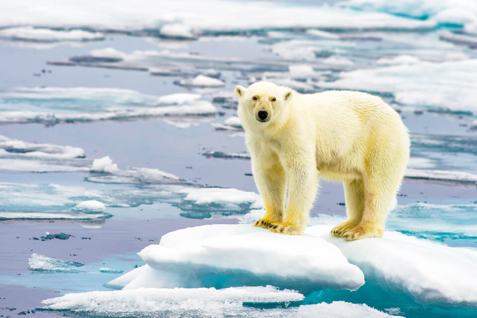
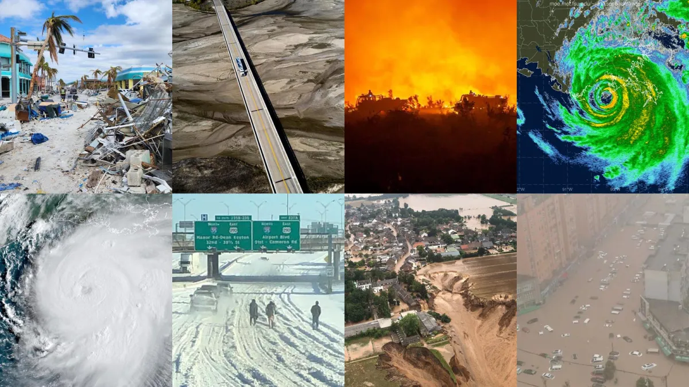

Understanding, Acting, Preserving
Average global temperatures are increasing, leading to more frequent and intense heatwaves. This can result in heat-related illnesses and stress on ecosystems.

The historical records of global temperatures commence in 1880 due to inadequate coverage of observations across the entire
planet before that period. The line graph presented above illustrates annual temperature anomalies spanning from 1880 to
2020, as documented by NASA, NOAA, the Berkeley Earth research group, the Met Office Hadley Centre (United Kingdom), and
the Cowtan and Way analysis. While there are slight fluctuations from year to year, all five datasets exhibit peaks and
troughs that align closely. Consistently, they indicate a pronounced warming trend in recent decades, with the last decade
being identified as the warmest.
The NASA GISS team selected the baseline period of 1951-1980, primarily because the U.S. National Weather Service uses a
three-decade timeframe to define "normal" or average temperatures. Additionally, the GISS temperature analysis initiative
commenced around 1980, making the most recent 30-year period 1951-1980. Their goal is to provide an estimation of
temperature changes that can be compared with predictions of global climate change influenced by atmospheric carbon dioxide,
aerosols, and variations in solar activity.
NASA's temperature analyses integrate data from over 20,000 weather stations, observations from ships and buoys regarding
sea surface temperatures, and temperature data from research stations in Antarctica. These on-site measurements are
processed using an algorithm that accounts for the diverse distribution of temperature stations worldwide and the
effects of urban heat islands.
As the ice masses melt, water flows into the oceans, contributing to the rise in sea levels.
The implications of elevated sea levels are extensive and present significant risks to coastal
areas and low-lying islands.

Key consequences encompass:
1. Coastal Erosion: The encroachment of seawater can result in the erosion of coastal regions, causing land loss and infrastructure damage.
2. Flooding: Elevated sea levels heighten the likelihood of flooding during storms and high tides,
impacting coastal communities and their economic activities.
3. Loss of Habitat: Numerous species, including those inhabiting coastal ecosystems,
face the risk of losing their habitats due to alterations in shorelines and ecosystems.
4. Saltwater Intrusion: Increasing sea levels may lead to the infiltration of saltwater into freshwater sources,
impacting drinking water supplies and agricultural lands.
5. Displacement of Communities: Communities residing in low-lying coastal areas are vulnerable to displacement as
their homes become uninhabitable due to increased flooding and erosion.
6. Impact on Biodiversity: Sea level changes can disrupt the equilibrium of coastal ecosystems,
influencing the distribution and abundance of marine species.
Addressing these challenges typically involves a combination of mitigation and adaptation strategies.
Mitigation aims to reduce greenhouse gas emissions to slow down climate change, while adaptation focuses on developing strategies to cope with ongoing changes. International cooperation and sustainable practices are essential for tackling the intricate and interconnected challenges posed by the melting of ice and rising sea levels.
The rise in global temperatures is linked to a rise in the occurrence and severity of extreme weather events,
such as hurricanes, droughts, floods, and wildfires. These occurrences can cause severe impacts on ecosystems,
agriculture, and human communities.

Key consequences encompass:
1. Coastal Erosion: The encroachment of seawater can result in the erosion of coastal regions, causing land loss and infrastructure damage.
2. Flooding: Elevated sea levels heighten the likelihood of flooding during storms and high tides,
impacting coastal communities and their economic activities.
3. Loss of Habitat: Numerous species, including those inhabiting coastal ecosystems,
face the risk of losing their habitats due to alterations in shorelines and ecosystems.
4. Saltwater Intrusion: Increasing sea levels may lead to the infiltration of saltwater into freshwater sources,
impacting drinking water supplies and agricultural lands.
5. Displacement of Communities: Communities residing in low-lying coastal areas are vulnerable to displacement as
their homes become uninhabitable due to increased flooding and erosion.
6. Impact on Biodiversity: Sea level changes can disrupt the equilibrium of coastal ecosystems,
influencing the distribution and abundance of marine species.
Addressing these challenges typically involves a combination of mitigation and adaptation strategies.
Mitigation aims to reduce greenhouse gas emissions to slow down climate change, while adaptation focuses on developing strategies to cope with ongoing changes. International cooperation and sustainable practices are essential for tackling the intricate and interconnected challenges posed by the melting of ice and rising sea levels.